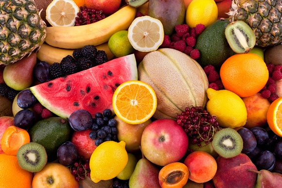

제철 과일 즐기는 방법
제철 과일은 신선하고 맛이 뛰어나며 영양이 풍부하기 때문에 다양한 방법으로 즐길 수 있습니다.
● 생과일 그대로 즐기기
✔ 가장 신선하고 건강한 방법은 껍질을 깨끗이 씻어 그대로 먹는 것!
✔ 껍질째 먹을 수 있는 과일(사과, 배, 포도 등)은 영양소 손실 없이 섭취 가능
● 샐러드로 활용하기
✔ 제철 과일과 채소를 곁들여 상큼한 샐러드 완성
✔ 추천 조합:
- 봄: 딸기 + 시금치 + 견과류
- 여름: 수박 + 오이 + 치즈
- 가을: 배 + 호두 + 루콜라
- 겨울: 감귤 + 양상추 + 견과류
● 주스 & 스무디 만들기
✔ 과일을 갈아서 주스로 마시면 소화가 잘 되고 간편하게 섭취 가능
✔ 스무디로 만들 때 요거트, 우유, 견과류를 함께 넣으면 영양 UP!
✔ 무가당으로 만들어야 건강에 좋음
● 디저트로 즐기기
✔ 과일을 활용한 다양한 디저트 만들기
과일청(딸기청, 레몬청) 만들어 음료로 활용
과일을 얹은 팬케이크, 와플, 요거트 볼
오븐에 구워 만든 구운 과일(사과, 배, 감)
● 요리 재료로 활용하기
✔ 고기 요리에 곁들여 풍미 더하기 (파인애플, 사과, 배)
✔ 과일소스 만들기 (딸기 소스, 블루베리 소스 등)
✔ 과일을 곁들인 치즈 플래터
● 말려서 보관하기
✔ 말린 과일(건망고, 건포도, 건바나나 등)로 간편한 간식 준비
✔ 천연 단맛을 살려 다이어트 간식으로 활용 가능
제철 과일을 활용하면 건강한 식생활을 유지하면서도 맛있게 즐길 수 있어요!